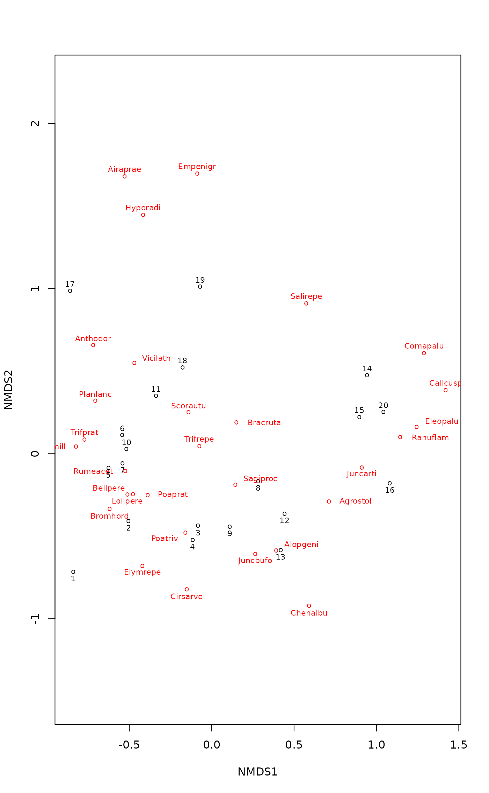

metaMDS.RdFunction metaMDS performs Nonmetric
Multidimensional Scaling (NMDS), and tries to find a stable solution
using several random starts. In addition, it standardizes the
scaling in the result, so that the configurations are easier to
interpret, and adds species scores to the site ordination. The
metaMDS function does not provide actual NMDS, but it calls
another function for the purpose. Currently monoMDS is
the default choice, and it is also possible to call the
isoMDS (MASS package).
metaMDS(comm, distance = "bray", k = 2, try = 20, trymax = 20, engine = c("monoMDS", "isoMDS"), autotransform =TRUE, noshare = (engine == "isoMDS"), wascores = TRUE, expand = TRUE, trace = 1, plot = FALSE, previous.best, ...) # S3 method for metaMDS plot(x, display = c("sites", "species"), choices = c(1, 2), type = "p", shrink = FALSE, ...) # S3 method for metaMDS points(x, display = c("sites", "species"), choices = c(1,2), shrink = FALSE, select, ...) # S3 method for metaMDS text(x, display = c("sites", "species"), labels, choices = c(1,2), shrink = FALSE, select, ...) # S3 method for metaMDS scores(x, display = c("sites", "species"), shrink = FALSE, choices, ...) metaMDSdist(comm, distance = "bray", autotransform = TRUE, noshare = TRUE, trace = 1, commname, zerodist = "ignore", distfun = vegdist, ...) metaMDSiter(dist, k = 2, try = 20, trymax = 20, trace = 1, plot = FALSE, previous.best, engine = "monoMDS", maxit = 200, parallel = getOption("mc.cores"), ...) initMDS(x, k=2) postMDS(X, dist, pc=TRUE, center=TRUE, halfchange, threshold=0.8, nthreshold=10, plot=FALSE, ...) metaMDSredist(object, ...)
| comm | Community data. Alternatively, dissimilarities either as
a |
|---|---|
| distance | Dissimilarity index used in |
| k | Number of dimensions. NB., the number of points \(n\) should be \(n > 2k + 1\), and preferably higher in global non-metric MDS, and still higher in local NMDS. |
| try, trymax | Minimum and maximum numbers of random starts in
search of stable solution. After |
| engine | The function used for MDS. The default is to use the
|
| autotransform | Use simple heuristics for possible data
transformation of typical community data (see below). If you do
not have community data, you should probably set
|
| noshare | Triggering of calculation step-across or extended
dissimilarities with function |
| wascores | Calculate species scores using function
|
| expand | Expand weighted averages of species in
|
| trace | Trace the function; |
| plot | Graphical tracing: plot interim results. You may want to set
|
| previous.best | Start searches from a previous solution. |
| x |
|
| choices | Axes shown. |
| type | Plot type: |
| display | Display |
| shrink | Shrink back species scores if they were expanded originally. |
| labels | Optional test to be used instead of row names. |
| select | Items to be displayed. This can either be a logical
vector which is |
| X | Configuration from multidimensional scaling. |
| commname | The name of |
| zerodist | Handling of zero dissimilarities: either
|
| distfun | Dissimilarity function. Any function returning a
|
| maxit | Maximum number of iterations in the single NMDS run;
passed to the |
| parallel | Number of parallel processes or a predefined socket
cluster. If you use pre-defined socket clusters (say,
|
| dist | Dissimilarity matrix used in multidimensional scaling. |
| pc | Rotate to principal components. |
| center | Centre the configuration. |
| halfchange | Scale axes to half-change units. This defaults
|
| threshold | Largest dissimilarity used in half-change scaling. |
| nthreshold | Minimum number of points in half-change scaling. |
| object | A result object from |
| ... | Other parameters passed to functions. Function
|
Non-metric Multidimensional Scaling (NMDS) is commonly
regarded as the most robust unconstrained ordination method in
community ecology (Minchin 1987). Function metaMDS is a
wrapper function that calls several other functions to combine
Minchin's (1987) recommendations into one command. The complete
steps in metaMDS are:
Transformation: If the data values are larger than common
abundance class scales, the function performs a Wisconsin double
standardization (wisconsin). If the values look
very large, the function also performs sqrt
transformation. Both of these standardizations are generally found
to improve the results. However, the limits are completely
arbitrary (at present, data maximum 50 triggers sqrt
and \(>9\) triggers wisconsin). If you want to
have a full control of the analysis, you should set
autotransform = FALSE and standardize and transform data
independently. The autotransform is intended for community
data, and for other data types, you should set
autotransform = FALSE. This step is perfomed using
metaMDSdist, and the step is skipped if input were
dissimilarities.
Choice of dissimilarity: For a good result, you should use
dissimilarity indices that have a good rank order relation to
ordering sites along gradients (Faith et al. 1987). The default
is Bray-Curtis dissimilarity, because it often is the test
winner. However, any other dissimilarity index in
vegdist can be used. Function
rankindex can be used for finding the test winner
for you data and gradients. The default choice may be bad if you
analyse other than community data, and you should probably select
an appropriate index using argument distance. This step is
performed using metaMDSdist, and the step is skipped if
input were dissimilarities.
Step-across dissimilarities: Ordination may be very difficult
if a large proportion of sites have no shared species. In this
case, the results may be improved with stepacross
dissimilarities, or flexible shortest paths among all sites. The
default NMDS engine is monoMDS which is able
to break tied values at the maximum dissimilarity, and this often
is sufficient to handle cases with no shared species, and
therefore the default is not to use stepacross with
monoMDS. Function isoMDS does
not handle tied values adequately, and therefore the default is to
use stepacross always when there are sites with no
shared species with engine = "isoMDS". The
stepacross is triggered by option noshare. If
you do not like manipulation of original distances, you should set
noshare = FALSE. This step is skipped if input data were
dissimilarities instead of community data. This step is performed
using metaMDSdist, and the step is skipped always when
input were dissimilarities.
NMDS with random starts: NMDS easily gets trapped into local
optima, and you must start NMDS several times from random starts
to be confident that you have found the global solution. The
strategy in metaMDS is to first run NMDS starting with the
metric scaling (cmdscale which usually finds a good
solution but often close to a local optimum), or use the
previous.best solution if supplied, and take its solution
as the standard (Run 0). Then metaMDS starts NMDS
from several random starts (minimum number is given by try
and maximum number by trymax). These random starts are
generated by initMDS. If a solution is better (has a lower
stress) than the previous standard, it is taken as the new
standard. If the solution is better or close to a standard,
metaMDS compares two solutions using Procrustes analysis
(function procrustes with option
symmetric = TRUE). If the solutions are very similar in their
Procrustes rmse and the largest residual is very small, the
solutions are regarded as convergent and the better one is taken
as the new standard. The conditions are stringent, and you may
have found good and relatively stable solutions although the
function is not yet satisfied. Setting trace = TRUE will
monitor the final stresses, and plot = TRUE will display
Procrustes overlay plots from each comparison. This step is
performed using metaMDSiter. This is the first step
performed if input data (comm) were dissimilarities. Random
starts can be run with parallel processing (argument
parallel).
Scaling of the results: metaMDS will run postMDS
for the final result. Function postMDS provides the
following ways of “fixing” the indeterminacy of scaling and
orientation of axes in NMDS: Centring moves the origin to the
average of the axes; Principal components rotate the configuration
so that the variance of points is maximized on first dimension
(with function MDSrotate you can alternatively
rotate the configuration so that the first axis is parallel to an
environmental variable); Half-change scaling scales the
configuration so that one unit means halving of community
similarity from replicate similarity. Half-change scaling is
based on closer dissimilarities where the relation between
ordination distance and community dissimilarity is rather linear
(the limit is set by argument threshold). If there are
enough points below this threshold (controlled by the parameter
nthreshold), dissimilarities are regressed on distances.
The intercept of this regression is taken as the replicate
dissimilarity, and half-change is the distance where similarity
halves according to linear regression. Obviously the method is
applicable only for dissimilarity indices scaled to \(0 \ldots
1\), such as Kulczynski, Bray-Curtis and Canberra indices. If
half-change scaling is not used, the ordination is scaled to the
same range as the original dissimilarities. Half-change scaling is
skipped by default if input were dissimilarities, but can be
turned on with argument halfchange = TRUE. NB., The PC
rotation only changes the directions of reference axes, and it
does not influence the configuration or solution in general.
Species scores: Function adds the species scores to the final
solution as weighted averages using function
wascores with given value of parameter
expand. The expansion of weighted averages can be undone
with shrink = TRUE in plot or scores
functions, and the calculation of species scores can be suppressed
with wascores = FALSE. This step is skipped if input were
dissimilarities and community data were unavailable. However, the
species scores can be added or replaced with
sppscores.
The function tries hard to find two convergent solutions, but it
may fail. With default engine = "monoMDS" the function will
tabulate the stopping criteria used, so that you can see which
criterion should be made more stringent. The criteria can be given
as arguments to metaMDS and their current values are
described in monoMDS. In particular, if you reach
the maximum number of iterations, you should increase the value of
maxit. You may ask for a larger number of random starts
without losing the old ones giving the previous solution in
argument previous.best.
In addition to too slack convergence criteria and too low number
of random starts, wrong number of dimensions (argument k)
is the most common reason for not finding convergent
solutions. NMDS is usually run with a low number dimensions
(k=2 or k=3), and for complex data increasing
k by one may help. If you run NMDS with much higher number
of dimensions (say, k=10 or more), you should reconsider
what you are doing and drastically reduce k. For very
heterogeneous data sets with partial disjunctions, it may help to
set stepacross, but for most data sets the default
weakties = TRUE is sufficient.
Please note that you can give all arguments of other
metaMDS* functions and NMDS engine (default
monoMDS) in your metaMDS command,and you
should check documentation of these functions for details.
NMDS is often misunderstood and wrong claims of its properties are common on the Web and even in publications. It is often claimed that the NMDS configuration is non-metric which means that you cannot fit environmental variables or species onto that space. This is a false statement. In fact, the result configuration of NMDS is metric, and it can be used like any other ordination result. In NMDS the rank orders of Euclidean distances among points in ordination have a non-metric monotone relationship to any observed dissimilarities. The transfer function from observed dissimilarities to ordination distances is non-metric (Kruskal 1964a, 1964b), but the ordination result configuration is metric and observed dissimilarities can be of any kind (metric or non-metric).
The ordination configuration is usually rotated to principal
components in metaMDS. The rotation is performed after
finding the result, and it only changes the direction of the
reference axes. The only invariant feature in the NMDS solution is
the rank order of Euclidean ordination distances, and this does
not change in rotation. Similarly, the rank order of distances
does not change in uniform scaling or centring of configuration of
points.
Function stressplot displays the method graphically:
it plots the observed dissimilarities against distances in
ordination space, and also shows the non-metric monotone
regression.
Function metaMDS returns an object of class
metaMDS. The final site ordination is stored in the item
points, and species ordination in the item species,
and the stress in item stress (NB, the scaling of the stress
depends on the engine: isoMDS uses
percents, and monoMDS proportions in the range \(0
\ldots 1\)). The other items store the information on the steps taken
and the items returned by the engine function. The object has
print, plot, points and text methods.
Functions metaMDSdist and metaMDSredist return
vegdist objects. Function initMDS returns a
random configuration which is intended to be used within
isoMDS only. Functions metaMDSiter and
postMDS returns the result of NMDS with updated
configuration.
Faith, D. P, Minchin, P. R. and Belbin, L. (1987). Compositional dissimilarity as a robust measure of ecological distance. Vegetatio 69, 57--68.
Kruskal, J.B. (1964a). Multidimensional scaling by optimizing goodness-of-fit to a nonmetric hypothesis. Psychometrika 29, 1--28.
Kruskal, J.B. (1964b). Nonmetric multidimensional scaling: a numerical method. Psychometrika 29, 115--129.
Minchin, P.R. (1987). An evaluation of relative robustness of techniques for ecological ordinations. Vegetatio 69, 89--107.
Function metaMDS is a simple wrapper for an NMDS engine
(either monoMDS or isoMDS) and
some support functions (metaMDSdist,
stepacross, metaMDSiter, initMDS,
postMDS, wascores). You can call these support
functions separately for better control of results. Data
transformation, dissimilarities and possible
stepacross are made in function metaMDSdist
which returns a dissimilarity result. Iterative search (with
starting values from initMDS with monoMDS) is
made in metaMDSiter. Processing of result configuration is
done in postMDS, and species scores added by
wascores. If you want to be more certain of reaching
a global solution, you can compare results from several independent
runs. You can also continue analysis from previous results or from
your own configuration. Function may not save the used
dissimilarity matrix (monoMDS does), but
metaMDSredist tries to reconstruct the used dissimilarities
with original data transformation and possible
stepacross.
The metaMDS function was designed to be used with community
data. If you have other type of data, you should probably set some
arguments to non-default values: probably at least wascores,
autotransform and noshare should be FALSE. If
you have negative data entries, metaMDS will set the previous
to FALSE with a warning.
metaMDS uses monoMDS as its
NMDS engine from vegan version 2.0-0, when it replaced
the isoMDS function. You can set argument
engine to select the old engine.
monoMDS (and isoMDS),
decostand, wisconsin,
vegdist, rankindex, stepacross,
procrustes, wascores, sppscores,
MDSrotate, ordiplot, stressplot.
## The recommended way of running NMDS (Minchin 1987) ## data(dune) # Global NMDS using monoMDS sol <- metaMDS(dune)#> Run 0 stress 0.1192678 #> Run 1 stress 0.1183186 #> ... New best solution #> ... Procrustes: rmse 0.02026285 max resid 0.0649233 #> Run 2 stress 0.119268 #> Run 3 stress 0.1900948 #> Run 4 stress 0.1183186 #> ... Procrustes: rmse 3.288415e-05 max resid 7.399109e-05 #> ... Similar to previous best #> Run 5 stress 0.1183186 #> ... Procrustes: rmse 5.857758e-05 max resid 0.0001866239 #> ... Similar to previous best #> Run 6 stress 0.1183186 #> ... New best solution #> ... Procrustes: rmse 0.0001201461 max resid 0.0003864476 #> ... Similar to previous best #> Run 7 stress 0.1183187 #> ... Procrustes: rmse 0.0001878157 max resid 0.000545781 #> ... Similar to previous best #> Run 8 stress 0.1192684 #> Run 9 stress 0.1192682 #> Run 10 stress 0.1809577 #> Run 11 stress 0.2069997 #> Run 12 stress 0.1192678 #> Run 13 stress 0.1183186 #> ... New best solution #> ... Procrustes: rmse 4.870482e-05 max resid 0.0001572191 #> ... Similar to previous best #> Run 14 stress 0.1183186 #> ... Procrustes: rmse 3.876641e-05 max resid 0.0001226919 #> ... Similar to previous best #> Run 15 stress 0.1183186 #> ... Procrustes: rmse 2.340273e-05 max resid 6.370759e-05 #> ... Similar to previous best #> Run 16 stress 0.1192678 #> Run 17 stress 0.119269 #> Run 18 stress 0.1192681 #> Run 19 stress 0.2035424 #> Run 20 stress 0.1192679 #> *** Solution reachedsol#> #> Call: #> metaMDS(comm = dune) #> #> global Multidimensional Scaling using monoMDS #> #> Data: dune #> Distance: bray #> #> Dimensions: 2 #> Stress: 0.1183186 #> Stress type 1, weak ties #> Two convergent solutions found after 20 tries #> Scaling: centring, PC rotation, halfchange scaling #> Species: expanded scores based on ‘dune’ #>## Start from previous best solution sol <- metaMDS(dune, previous.best = sol)#> Starting from 2-dimensional configuration #> Run 0 stress 0.1183186 #> Run 1 stress 0.188964 #> Run 2 stress 0.2034981 #> Run 3 stress 0.119268 #> Run 4 stress 0.1808911 #> Run 5 stress 0.2086845 #> Run 6 stress 0.1192685 #> Run 7 stress 0.1889654 #> Run 8 stress 0.1192678 #> Run 9 stress 0.2035424 #> Run 10 stress 0.1183186 #> ... Procrustes: rmse 3.651113e-05 max resid 0.0001292105 #> ... Similar to previous best #> Run 11 stress 0.1192678 #> Run 12 stress 0.1183186 #> ... Procrustes: rmse 0.000123018 max resid 0.0003426392 #> ... Similar to previous best #> Run 13 stress 0.1183186 #> ... Procrustes: rmse 7.257479e-06 max resid 2.233966e-05 #> ... Similar to previous best #> Run 14 stress 0.1192678 #> Run 15 stress 0.1192678 #> Run 16 stress 0.204213 #> Run 17 stress 0.1183186 #> ... Procrustes: rmse 5.84309e-05 max resid 0.0001821227 #> ... Similar to previous best #> Run 18 stress 0.1192678 #> Run 19 stress 0.1192679 #> Run 20 stress 0.1192683 #> *** Solution reached## Local NMDS and stress 2 of monoMDS sol2 <- metaMDS(dune, model = "local", stress=2)#> Run 0 stress 0.1928489 #> Run 1 stress 0.1928552 #> ... Procrustes: rmse 0.002023839 max resid 0.005834021 #> ... Similar to previous best #> Run 2 stress 0.1928587 #> ... Procrustes: rmse 0.002433556 max resid 0.006918491 #> ... Similar to previous best #> Run 3 stress 0.1928475 #> ... New best solution #> ... Procrustes: rmse 0.0004598212 max resid 0.00131996 #> ... Similar to previous best #> Run 4 stress 0.1928513 #> ... Procrustes: rmse 0.001057736 max resid 0.003041677 #> ... Similar to previous best #> Run 5 stress 0.1928503 #> ... Procrustes: rmse 0.0008821211 max resid 0.002551715 #> ... Similar to previous best #> Run 6 stress 0.1928496 #> ... Procrustes: rmse 0.0007569097 max resid 0.002191488 #> ... Similar to previous best #> Run 7 stress 0.1928484 #> ... Procrustes: rmse 0.0004957777 max resid 0.001433017 #> ... Similar to previous best #> Run 8 stress 0.1928475 #> ... New best solution #> ... Procrustes: rmse 7.18271e-05 max resid 0.0002241139 #> ... Similar to previous best #> Run 9 stress 0.1928525 #> ... Procrustes: rmse 0.001150305 max resid 0.003223645 #> ... Similar to previous best #> Run 10 stress 0.19285 #> ... Procrustes: rmse 0.000733306 max resid 0.002097207 #> ... Similar to previous best #> Run 11 stress 0.1928537 #> ... Procrustes: rmse 0.001354286 max resid 0.00380084 #> ... Similar to previous best #> Run 12 stress 0.1928475 #> ... Procrustes: rmse 0.0001217324 max resid 0.0003645841 #> ... Similar to previous best #> Run 13 stress 0.1928545 #> ... Procrustes: rmse 0.001438897 max resid 0.004031714 #> ... Similar to previous best #> Run 14 stress 0.1928545 #> ... Procrustes: rmse 0.001439891 max resid 0.004097307 #> ... Similar to previous best #> Run 15 stress 0.1928525 #> ... Procrustes: rmse 0.001171334 max resid 0.003280753 #> ... Similar to previous best #> Run 16 stress 0.1928476 #> ... Procrustes: rmse 0.0001680328 max resid 0.0004898915 #> ... Similar to previous best #> Run 17 stress 0.1928581 #> ... Procrustes: rmse 0.001821345 max resid 0.005157531 #> ... Similar to previous best #> Run 18 stress 0.1928487 #> ... Procrustes: rmse 0.0005026738 max resid 0.001451174 #> ... Similar to previous best #> Run 19 stress 0.1928535 #> ... Procrustes: rmse 0.001286957 max resid 0.003690688 #> ... Similar to previous best #> Run 20 stress 0.1928543 #> ... Procrustes: rmse 0.001416456 max resid 0.00396482 #> ... Similar to previous best #> *** Solution reachedsol2#> #> Call: #> metaMDS(comm = dune, model = "local", stress = 2) #> #> local Multidimensional Scaling using monoMDS #> #> Data: dune #> Distance: bray #> #> Dimensions: 2 #> Stress: 0.1928475 #> Stress type 2, weak ties #> Two convergent solutions found after 20 tries #> Scaling: centring, PC rotation, halfchange scaling #> Species: expanded scores based on ‘dune’ #>## Use Arrhenius exponent 'z' as a binary dissimilarity measure sol <- metaMDS(dune, distfun = betadiver, distance = "z")#> Run 0 stress 0.1067169 #> Run 1 stress 0.18118 #> Run 2 stress 0.1073148 #> Run 3 stress 0.1073148 #> Run 4 stress 0.1067169 #> ... New best solution #> ... Procrustes: rmse 6.601443e-06 max resid 1.69716e-05 #> ... Similar to previous best #> Run 5 stress 0.1067169 #> ... Procrustes: rmse 2.581342e-06 max resid 5.921236e-06 #> ... Similar to previous best #> Run 6 stress 0.1067169 #> ... Procrustes: rmse 7.838933e-06 max resid 1.66233e-05 #> ... Similar to previous best #> Run 7 stress 0.107471 #> Run 8 stress 0.1067169 #> ... Procrustes: rmse 1.664908e-05 max resid 4.231844e-05 #> ... Similar to previous best #> Run 9 stress 0.1073149 #> Run 10 stress 0.1073148 #> Run 11 stress 0.1067169 #> ... Procrustes: rmse 3.672607e-06 max resid 9.771668e-06 #> ... Similar to previous best #> Run 12 stress 0.1808874 #> Run 13 stress 0.1069788 #> ... Procrustes: rmse 0.00685006 max resid 0.02420664 #> Run 14 stress 0.1067169 #> ... Procrustes: rmse 9.179744e-06 max resid 1.857877e-05 #> ... Similar to previous best #> Run 15 stress 0.1067169 #> ... Procrustes: rmse 2.106148e-05 max resid 5.46519e-05 #> ... Similar to previous best #> Run 16 stress 0.1815482 #> Run 17 stress 0.1067169 #> ... Procrustes: rmse 2.159491e-05 max resid 5.284808e-05 #> ... Similar to previous best #> Run 18 stress 0.171178 #> Run 19 stress 0.1067169 #> ... Procrustes: rmse 3.880136e-06 max resid 9.71969e-06 #> ... Similar to previous best #> Run 20 stress 0.1073148 #> *** Solution reachedsol#> #> Call: #> metaMDS(comm = dune, distance = "z", distfun = betadiver) #> #> global Multidimensional Scaling using monoMDS #> #> Data: dune #> Distance: beta.z #> #> Dimensions: 2 #> Stress: 0.1067169 #> Stress type 1, weak ties #> Two convergent solutions found after 20 tries #> Scaling: centring, PC rotation, halfchange scaling #> Species: expanded scores based on ‘dune’ #>